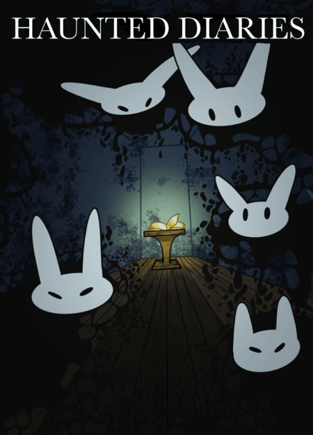
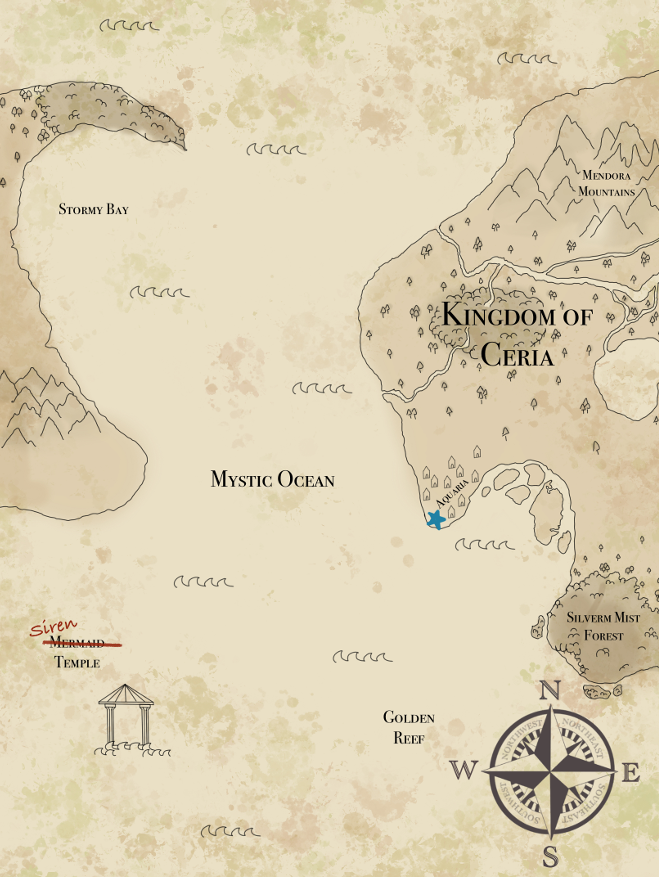

Homepage
This is my first project for my ITMD (web development) class! I am utilizing html to create a basic website with videos, pictures and links. I originally wanted to go into medicine and become a doctor, I even went to a medical based high school. However, in my junior year of high school a new coding club was set up at my school.
I was curious and joined it alongside one of my friends, it was a class about creating basic java for video games and I really enjoyed it. With my peers we were able to make a very basic maze game with the help of our instructors, that is when I decided to change my career-path to tech.
When I got to university I decided to major in computer science, it ws very different from the previous experience I had with coding and was less fun and a lot more math-based. I was not secure about the major I had chosen and my roommate recommended I transfer to another, after some research I landed on Game Design and made my switch.
Since switching my major I enjoy what I study and have the ability to work on many different things such as my art, programming, project management, and writing skills. I love being able to mix them together and study them interchangably!
Here are a few pieces I have made for games a game I published for a class:
This is a map I made for a tabletop roleplay game where the players are pirates and try to steal gold from sirens. I took inspiration from others maps of this similar style and tried to make the paper look as dirty and worn as possible.
This is a poster I made for a game I helped create in a class, it was an educational game aimed at elementary and middle school aged childrne to help encourage them to write. My group incorperated a more create aesthetic from other games and media sources like Hallow Knight and Luigi's Haunted Mansion.